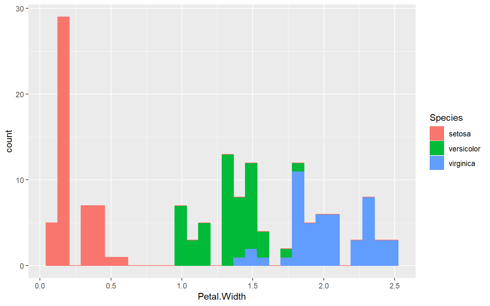

Lab 01 - Intro to R and RStudio
Lab 01 - Intro to R and RStudio
## Warning: package 'knitr' was built under R version 3.5.3## Warning: package 'learnr' was built under R version 3.5.31 Introduction. Goal
The main goal of this lab is to introduce you to R and RStudio, the software that we will be using throughout the course to collect data, prepare and transform it, and to produce high quality visualizations and charts that allow us to come to informed conclusions.
We will assume you don’t have any previous experience with either R or RStudio, so in this lab we will cover the very basics, starting from the installation of the software and the first steps. If you do know some R, you may find some of the topics quite basic, and you are free to jump to wherever you wish within the document. Note however, that you are expected to complete the exercises. Moreover, we provide some tips and advices that may be interesting even if you have some experience with R.
Important: Before Starting The Lab To avoid the pain of setting up software in different computers with different configurations and OS, we will use RStudio Cloud, a service that allows to create your analyses using RStudio directly from your browser. In this way, there will be no software to install and nothing to configure on your computer. All the data and packages needed to run the lab will be already uploaded, and the instructors can look at your files without the need for data transfer. However, it is also good idea to install R and RStudio on your machine, so you can use it beyond this class. Remember that R is the name of the programming language itself and RStudio is an IDE (i.e. an interface), so you won’t be able to use RStudio without previously installing R. Download and install the latest version of R here Download and install RStudio here Please note that if you use the University machines, they already have suitable versions of R and RStudio installed.
2 Introduction to RStudio
Throughout this lesson, we’re going to teach you some of the fundamentals of the R language. We’ll be using RStudio: a free, open source R integrated development environment. It provides a built-in editor, works on all platforms (including on servers) and provides many advantages such as integration with version control and project management (see lecture 1 to know more about the advantages of R and RStudio).
As mentioned above, throughout this course we will use RStudio Cloud, a service that allows to use RStudio in your browser. However, the layout, view and functioning of your RStudio Cloud is EXACTLY the same as it would the standalone RStudio, so all the instructions can apply to both ways of working.
2.1 Basic layout
When you first open RStudio (or in this case, RStudio Cloud), you will be greeted by three panels:
- The interactive R console (entire left)
- Environment/History (tabbed in upper right)
- Files/Plots/Packages/Help/Viewer (tabbed in lower right)

Basic layout of RStudio
2.1.1 Console
The console is the heart of R, it is where R actually evaluates and executes the code. This console in RStudio is the same as the one you would get if you decided to use R without RStudio. The first thing you will see in the R interactive session is a bunch of information, followed by a > and a blinking cursor. This is a prompt that tells you that R is ready for new code.
The console operates on the idea of a “Read, evaluate, print” loop: you type in commands, R tries to execute them, and then returns a result. You can type code directly into the console after the prompt and get an immediate response, or copy it from elesewhere and paste it in the console. For example, if you type 1+1 into the console and press enter (do it now), you’ll see that R immediately gives an output of 2.
2.1.2 Environment/History
The Environment tab shows the names of all the data objects (like vectors, matrices, and dataframes) that you’ve defined in your current R session (don’t worry, we’ll cover this later). You can also see information like the number of observations and rows in data objects. The tab also has a few clickable actions like Import Dataset which will open a graphical user interface (GUI) for importing data into R.
The History tab of this panel shows a history of all the code you’ve previously evaluated in the Console. Maybe it is not so commonly used as the Environment tab, but often it is useful to have the history of code you just ran.
As you get more comfortable with R, you might find the Environment / History panel more and more useful. But at the beginning you will probably just ignore it, so you can even just minimize the window by clicking the minimize button on the top right of the panel.
2.1.3 Files / Plots / Packages / Help
The Files / Plots / Packages / Help panel shows you lots of helpful information. Let’s go through each tab in detail:
Files: it gives you access to the file directory on your hard drive, so it is very useful to fnd and load code scripts. One nice feature of the “Files” panel is that you can use it to set your working directory - if you have all your files in a folder (which you should), you can point to it by clicking “More” and then “Set As Working Directory.” This will easen the process of reading and saving files, because RStudio will point to that directory by default. We’ll talk about working directories in more detail soon.
Plots: this panel shows all the plots that you generate during an R session. There are buttons for opening the plot in a separate window and exporting the plot as a
.pdfor.jpeg(though we will see how to do this with code, because it is way more convenient and customizable). To see how plots are displayed in thePlotspanel, just copy the code below in theconsoleto display an histogram of the petal length of three species of Iris plants, that are included in the iris database (loaded with the basic R installation). When you do, you should see a plot similar to the one in the Figure show up in the Plots panel.
library(ggplot2)
ggplot(iris) +
geom_histogram(aes(Petal.Width, color = Species, fill = Species))
Packages: shows a list of all the R packages installed on your harddrive and indicates whether or not they are currently loaded. Packages that are loaded in the current session are checked while those that are installed but not yet loaded are unchecked. We’ll discuss packages in more detail later.
Help: help menu for R functions. You can either type the name of a function in the search window, or use the code to search for a function with the name
Of course, the layout in RStudio can be modified, and the user can set up wheich panels to see, the color of the code, and many other issues. You can learn more about customizing RStuio here. Anyway, don’t worry about the different panels and their functionalities for now. You will learn more about them as we use it during the course, and hopefully you will get very familiar with them.
3 Introduction to R
So once we know what we are seeing, we can start using R. As we said in the lectures, R is quite a versatile tool, because it goes from a statistical tool to a complex programming language. Let’s some of the most basic uses, and in the process we will get used to how R works.
3.1 Using R as a calculator
The simplest thing you could do with R is use it as a calculator, i.e. to do arithmetics. We just did this above. But now, for example, type the following:
156 * 35[1] 5460You’ll see that R will print out the answer, with a preceding [1]. Don’t worry about this for now, we’ll explain that later. For now think of it as indicating output.
If you type in an incomplete command, R will wait for you to complete it. For example, try to write in the console
1 +
Any time you hit Return and the R session shows a + instead of a >, it means it’s waiting for you to complete the command. If you want to cancel a command you can press Escape and RStudio will give you back the > prompt. This can also be used to interrupt a long-running job.
When using R as a calculator, the order of operations is the same as you would have learned back in school.
From highest to lowest precedence:
- Parentheses:
(,) - Exponents:
^or** - Divide:
/ - Multiply:
* - Add:
+ - Subtract:
-
3 + 5 * 2[1] 13You can use parentheses to group operations to force the order of evaluation, or to make clear what you intend.
(3 + 5) * 2[1] 16However, although the use of parentheses clarifies the sense of the code, it can easily get unwieldy when not needed. Remember that others (or even yourself!) may later read your code.
3 + 5 * 2 ^ 2 # clear, if you remember the rules[1] 233 + 5 * (2 ^ 2) # this is probably easier to understand[1] 23(3 + (5 * (2 ^ 2))) # too hard to read[1] 23You may have noticed that part of the text above has not been processed by R. Actually, anything that follows after the hash symbol # is ignored by R when it executes code. The text after the # is called a “comment”, and can be very useful to remember the purpose and steps of a given analysis. We will talk more about comments in the lesson on “Good coding practices”.
3.2 Mathematical functions
R has many built in mathematical functions. To call a function, we simply type its name, followed by open and closing parentheses. Anything we type inside the parentheses are called the function’s arguments:
1 + 1# Let's work with some trigonometry functions
sin(1) # sinus of a number[1] 0.841471log(1) # natural logarithm[1] 0log10(10) # base-10 logarithm[1] 1exp(0.5) # e^(1/2)[1] 1.648721Remembering function names and arguments: As we said, R has multitude of mathematical functions, and many more are included in the packages. Don’t worry about trying to remember every function in R. You can simply look them up on Google, or if you can remember the start of the function’s name, type the start of it, then press the tab key. This will show a list of functions whose name matches what you’ve typed so far. This is known as tab completion, and can save a lot of typing (and reduce the risk of typing errors). Tab completion works both in R and in RStudio. In RStudio this feature is even more useful; a extract of the function’s help file will be shown alongside the function name. Try to type
meand press tab Also, typing a?before the name of a command will open the help page for that command, as well as providing a detailed description of the command and how it works, scrolling to the bottom of the help page will usually show a collection of code examples which illustrate command usage.
3.3 Comparing things
We can also do comparisons in R, and it will tell us if the comparison we are testing is either TRUE or FALSE. For instance, try the following comparisons:
1 == 1 # equality (note two equals signs, read as "is equal to")[1] TRUE1 != 2 # inequality (read as "is not equal to")[1] TRUE2 < 1 # less than[1] FALSE1 > 0 # greater than[1] TRUE6 <= 6 # less than or equal to[1] TRUE1 >= -9 # greater than or equal to[1] TRUETip: Comparing Numbers A word of warning about comparing numbers: you should never use
==to compare two numbers unless they are integers (a data type which can specifically represent only whole numbers). Computers may only represent decimal numbers with a certain degree of precision, so two numbers which look the same when printed out by R, may actually have different underlying representations and therefore be different by a small margin of error (called Machine numeric tolerance). Instead you should use theall.equalfunction.
4 Variables and assignment in R
We can store values in variables using the assignment operator <-, like this:
x <- 1/10Notice that assignment does not print a value. Instead, we stored it for later in something called a variable. x now contains the value 0.1. To see the content of a variable in the console, we just need to type its name.
x[1] 0.1Tip: assignment It is also possible to use the
=operator for assignment, as in:x = 1/40. This is much less common among R users, and we will see later why it is not a good idea to use it. If you use it, try to change your habits as soon as possible.
The interesting thing is that our variable x is now stored in memory, and so it can now be used in place of a number in any calculation that expects a number:
x + 3[1] 3.1log(x)[1] -2.302585Variables can be reassigned as amny times as wished, but that means that is previous value will be deleted from memory:
x <- 100x used to contain the value 0.1 and and now it has the value 100 (see the Environment tab in RStudio).
Assignment values can contain the variable being assigned to, and in this case they will take the currently stored value, calculate whatever is contained in the code, and overwrite the previous value with the new one.
x <- x *2 # notice how RStudio updates its description of x on the Environment tabWarning: Although the possibility of overwriting a variable as a result of an operation is one of the most useful features in R, it comes with danger. When performing complex tasks, It is extremely easy to overwrite a variable inadvertently, and all our calculations from that moment onwards run the risk of being erroneous. For example, if you run the code above twice insted of once,
xwill get a value of400instead of200. If you do this without noticing it,xwon’t have the value you expect it to have. Also, if you make a mistake in the code above and R returns an error message, that means you won’t have overwritten the value ofx, which will sill be100. So, ALWAYS check the current value of a variable (in the “Environment” panel) before transofrming or overwritting it.
5 Objects in R
Anytime we assign a variable and store it in R’s memory, we are actually creating an object. If you look for the Environment tab in one of the panes of RStudio, you will see that x and its value have appeared, and are updated as we transform xwith our code.
Casi todo son objetos. Los objetos mas sencillos son variables, pero hay otros como funciones, modelos, figuras. Recordar que R es object oriented.
Para crear un objeto basta con asignarle un nombre. Hemos vistro como crear objetos sencillos (variables) que continene un numero o el resultado de una operacion aritmentica sencilla. Pero casi cialquier cosa puede giardarse en R como un objeto.
Los objetos se caracterizan por nombre y contenido, u eso depende del tipo de objeto que hayamos creado. Por ejemplo podemos hacer
ejemplo numerico ejemplo texto ejemplo
Todos ellos son objetos, son variables, pero de diferente tipo. Veamos algunos de los principales tipos de objetos que hay en r
We have previously mentioned that R is an object-oriented language. This basically means that it is designed to use objects as the basis of all the tasks. Almost everything in R is an object (functions, variables, results …). Thus, entities that are created and manipulated in R are called objects, including data, functions and other structures.
Objects are stored and characterized by their name and content. Any object we create will have a given set of characteristics depending on the type of object it is. The main objects of variable type in R are:
- Numeric: an integer or decimal number depending on whether we specify decimal figures.
- Character: a categorical variable or text.
- Vector: a list of values of the same type.
- Factor:
- Array: a vector of k dimensions.
- Matrix: a particular case of array where k = 2 (rows, cols).
- Data.frame: table composed of vectors.
- List: vector with values of different types.
There are other types of objects in R, but these are the main cases. For example, another object we are going to work with are model objects, which store the output of a given statistical model, like a linear regression model for instance. We will work with them later in the course.
5.1 Creating objects
Prueba a introducir las siguientes instrucciones para crear distintos tipos de objeto:
n <- 15
x <- 1.0
name <- "Marcos"We can also store in an object the result form any operarion:
n <- 10+2So here is the thing. The type of object we create depends on the content that we assign. Therefor, if we assign a numeric value, we are creating an object of type number (integer or decimal) and if we assign a text string (any quoted text, either with single or double quotes), we are creating a text type object or string. Once created, the objects are visualized using calls using the name that we have assigned to the object. That is, we will write to the terminal in the name of the object and then its value will be shown.
n[1] 12name[1] "Marcos"Some considerations to keep in mind when creating objects or working with R in general lines: - R is case-sensitive so radio ≠ Radio - If a new value is assigned to an object it is overwritten and deletes the previous value. - Textual information (also knwon as string or char) is entered between quotation marks, either single (’’) or double (“”). - The function ls() will show us in the terminal the objects created so far. - If the value obtained from an instruction is not assigned in an object it is only displayed in the terminal, it is not stored.
6 Saving our commands: Scripts in R
So far we have inserted instructions directly in the console but this is not the most efficient way to work. 99% of the time you should be using the Source rather than the Console, that is, you will write your commands into a script. A script is nothing more than a file that contains an ordered set of instructions. This means we can write a text file with the instructions we want to insert and then run them at once.The advantage of this is straightforward: if you type code into the console, it won’t be saved (though you can look back on your command History). And if you make a mistake in typing code into the console, you’d have to re-type everything all over again. Instead, if you write all your code in the Source, it will be available at any time needed, and if you need to rerun some analyses you just need to open the needed files and run all the code within.
We can create a new script by choosing the menu item: File, New File, R script, or with the keyboard shortcut Ctrl + Shift + N. Script files are text files, that can be opened by any text editor. By convention they have the extension .R.
Tip: you should get used as fast as possible to write most of your code in a document in the Source. Only type directly into the Console to do quick analyses.
Commands within a script won’t be excuted immediately, just when you ask for it. To execute the command in which the cursor is currently you need to press Ctrl+Enter. Note that the cursor does not have to be at the start of the command, and that the command can extend over more than one line. However, if a single line does make a complete command, R will just execute one command. After executing one command, the cursor will automatically jump to the next command, making it very efficient to run large pieces of code by just pressing Ctrl+Enter several times.
To get a better control of the piece of code you want to execute, you can select it and press Ctrl+Enter, and R will execute the selection.
To run all of the code in the script, press Ctrl+Shift+Enter.
Tip: Projects in R studio When we are performing an analysis we will typically be using many files… input data, files containing code to perform the analysis, and results. By creating a project in Rstudio we make it easier to manage these files. We’ll learn more about RStudio projects and how to use them to easen the workflow in later lessons.
6.1 Vectors
One of the most common objects in R is the vector. A vector can store several values, which must necessarily be of the same type (all numbers, all text, and so forth). There are several ways to create vectors. Try entering the following instructions and viewing the created objects:
v1 <- c(1, 2, 3, 4, 5)
v1[1] 1 2 3 4 5v2 <- 1:10
v2 [1] 1 2 3 4 5 6 7 8 9 10v3 <- -5:3
v3[1] -5 -4 -3 -2 -1 0 1 2 3v4 <- c('spatial','statistics','rules!!')
v4[1] "spatial" "statistics" "rules!!" We have just covered the basic methods for vector creation. The most common approach is use the function c() which allow as to introduce values manually by separatting them using ,.
v1 <- c(1, 2, 3, 4, 5)
v1[1] 1 2 3 4 5v4 <- c('spatial','statistics','rules!!')
v4[1] "spatial" "statistics" "rules!!" Another option that only works for vectors contaning integer values is the use of : which produces a ordered sequence of numbers by adding 1 starting from the first value and finishing in the last.
v2 <- 1:10
v2 [1] 1 2 3 4 5 6 7 8 9 10v3 <- -5:3
v3[1] -5 -4 -3 -2 -1 0 1 2 36.2 Working with vectors
As well as dealing with single values, we can work with vectors of values. There are various ways of creating vectors; the : operator will generate sequences of consecutive values:
1:5[1] 1 2 3 4 5-3:3[1] -3 -2 -1 0 1 2 35:1[1] 5 4 3 2 1The result of the : operator is a vector: i.e. a 1 dimensional array of values. We can apply functions to each and all of the elements of a vector:
(1:5) * 2[1] 2 4 6 8 102^(1:5)[1] 2 4 8 16 32We can also assign a vector to a variable:
x <- 5:10We can also create vectors “by hand” using the c() function; this function is used to combine values into a vector; these values can, themselves, be vectors:
c(2, 4, -1)[1] 2 4 -1c(x, 2, 2, 3)[1] 5 6 7 8 9 10 2 2 3Vectors aren’t limited to storing numbers:
c("a", "b", "c", "def")[1] "a" "b" "c" "def"R comes with a few built in constants, containing useful values:
LETTERS [1] "A" "B" "C" "D" "E" "F" "G" "H" "I" "J" "K" "L" "M" "N" "O" "P" "Q"
[18] "R" "S" "T" "U" "V" "W" "X" "Y" "Z"letters [1] "a" "b" "c" "d" "e" "f" "g" "h" "i" "j" "k" "l" "m" "n" "o" "p" "q"
[18] "r" "s" "t" "u" "v" "w" "x" "y" "z"month.abb [1] "Jan" "Feb" "Mar" "Apr" "May" "Jun" "Jul" "Aug" "Sep" "Oct" "Nov"
[12] "Dec"month.name [1] "January" "February" "March" "April" "May"
[6] "June" "July" "August" "September" "October"
[11] "November" "December" We will use some of these in the examples that follow.
7 Data types
One thing you may have noticed is that all the data in a vector has been the same type; all the elements have had the same type (i.e. they have all been numbers, all been character, or all been logical (TRUE/FALSE)). This is an important property of vectors; the type of data the vector holds is a property of the vector, not of each element. Let’s look at what happens if we try to create a vector of numeric and character data:
c(1, 2, "three", "four", 5)[1] "1" "2" "three" "four" "5" We see that R has coerced the elements containing digits to strings, so that all the elements have the same type. We will talk more about data types in a later episode.
7.0.1 Vector lengths
We can calculate how many elements a vector contains using the length() function:
length(x)[1] 6length(letters)[1] 267.0.2 Subsetting vectors
Having defined a vector, it’s often useful to extract parts of a vector. We do this with the [] operator. Using the built in month.name vector:
month.name[2][1] "February"month.name[2:4][1] "February" "March" "April" Let’s unpick the second example; 2:4 generates the sequence 2,3,4. This gets passed to the extract operator []. We can also generate this sequence using the c() function:
month.name[c(2,3,4)][1] "February" "March" "April" **Tip:** In many programming languages (C and Python, for example), the first element of a vector has an index of
0. In R, the first element is always1.
Values are returned in the order that we specify the indices. We can extract the same element more than once:
month.name[4:2][1] "April" "March" "February"month.name[c(1,1,2,3,4)][1] "January" "January" "February" "March" "April" 7.0.3 Skipping and removing elements
If we use a negative number as the index of a vector, R will return every element except for the one specified:
month.name[-2] [1] "January" "March" "April" "May" "June"
[6] "July" "August" "September" "October" "November"
[11] "December" [1] “January” “March” “April” “May” “June”
[6] “July” “August” “September” “October” “November” [11] “December”
We can skip multiple elements:
month.name[c(-1, -5)] # or [1] "February" "March" "April" "June" "July"
[6] "August" "September" "October" "November" "December" month.name[-c(1,5)] [1] "February" "March" "April" "June" "July"
[6] "August" "September" "October" "November" "December" Tip: Order of operations A common error occurs when trying to skip slices of a vector. Most people first try to negate a sequence like so:
month.name[-1:3]This gives a somewhat cryptic error:Error in month.name[-1:3]: only 0's may be mixed with negative subscriptsBut remember the order of operations.:is really a function, so what happens is it takes its first argument as -1, and second as 3, so generates the sequence of numbers: -1, 0, 1, 2, 3.
The correct solution is to wrap that function call in brackets, so that the - operator is applied to the sequence:
-(1:3)[1] -1 -2 -3month.name[-(1:3)][1] "April" "May" "June" "July" "August" "September"
[7] "October" "November" "December" 7.0.4 Subsetting with logical vectors
As well as providing a list of indices we want to keep (or delete, if we prefix them with -), we can pass a logical vector to R indicating the indices we wish to select:
month.name[c(TRUE, FALSE, TRUE, TRUE, FALSE, FALSE,
FALSE, TRUE, TRUE, FALSE, FALSE, TRUE)][1] "January" "March" "April" "August" "September" "December" The idea of selecting elements of a vector using a logical subsetting vector may seem a bit esoteric, and a lot more typing than just selecting the elements you want by index, but it becomes really useful when we write code to generate the logical vector:
my_vector <- c(10, 3, 6, 7, 9)
my_vector > 6[1] TRUE FALSE FALSE TRUE TRUEmy_vector[my_vector > 6][1] 10 7 9Tip: Combining logical conditions There are many situations in which you will wish to combine multiple logical criteria. For example, we might want to find all the elements that are between two values. Several operations for combining logical vectors exist in R:
-&, the logical “AND” operator: returns TRUE if both the left and right are TRUE.
-|, the logical “OR” operator: returns TRUE, if either the left or right (or both) are TRUE.
-!, the logical “NOT” operator: converts TRUE to FALSE and FALSE to TRUE. It can negate a single logical condition (e.g. !TRUE becomes FALSE), or a whole vector of conditions(e.g. !c(TRUE, FALSE) becomes c(FALSE, TRUE)).
Additionally, you can compare the elements within a single vector using the all function (which returns TRUE if every element of the vector is TRUE) and the any function (which returns TRUE if one or more elements of the vector are TRUE).
Vectors, lists, arrays, and dataframes are indexed objects. This means that they store several values and assign to each of them a numerical index that indicates their position within the object. We can access the information stored in each of the positions by using name[position]:
v1[1][1] 1Note that opposite to most of the other programming languages, the index for the first position in an indexed object is 1, whereas Python, C++ and others use 0.
As with an unindexed object, it is possible to modify the information of a particular position using the combination name[position] and the assignment operator <-. For example:
v3[9] <- 10000
v3[9][1] 100007.1 Lists
Once we have seen vectors we go to explore how objects of type list work. A list is an object similar to a vector with the difference that lists allow to store values of different type. Lists are created using the list(value1, value2, …) function. For example:
list1 <- list(1,7,'Marcos')
list1[[1]]
[1] 1
[[2]]
[1] 7
[[3]]
[1] "Marcos"To access the values stored in the different positions proceed in the same way we did with vectors, ie name[position]:
list1[3][[1]]
[1] "Marcos"We can use the length() function with list too:
length(list1)[1] 37.2 Arrays
Arrays are an extension of vectors, which add additional dimensions to store information. The most common case is the 2-dimensional matrix (rows and columns). To create an array, we use array(values, dimensions). Both values and dimensions are specified using vectors. In the following example we see how to create a matrix with 4 rows and 5 columns, thus containing 20 values, in this case correlative numbers from 1 to 20:
myarray<- array(1:20,dim=c(4,5))
myarray [,1] [,2] [,3] [,4] [,5]
[1,] 1 5 9 13 17
[2,] 2 6 10 14 18
[3,] 3 7 11 15 19
[4,] 4 8 12 16 20To access the stored values we will use a combination of row-and-column positions like matrix[row, col], where row indicates the row postition and col the column one. If we only assign value to one of the coordinates ([row,] or [,col]) we get the vector corresponding to the specified row or column.
myarray[3,2][1] 7myarray[3,][1] 3 7 11 15 19myarray[,2][1] 5 6 7 87.3 Data.frame
A data frame is used for storing data tables. It is a list of vectors of equal length. For example, the following variable df is a data frame containing three vectors n, s, b.
n <- c(2, 3, 5)
s <- c("aa", "bb", "cc")
b <- c(TRUE, FALSE, TRUE)
df <- data.frame(n, s, b)As you can see, the function data.frame() is used to create the data.frame. However, we will seldom use these function to create objects or store data. Normally, we will call an instruction to read text files containing data or call data objects available in some packages.
We’ve seen how to assign numbers to variables, but we aren’t limited to store numbers in variables:
y <- "I like Lleida"Note that we need to put strings of characters inside quotes. Otherwise R will thing that i is an object, and will return an error
y <- I like Lleida
Logically, the type of data that is stored in a variable affects what we can do with it:
x + 1[1] 6 7 8 9 10 11sentence + 1
Error in sentence + 1: non-numeric argument to binary operator We will discuss the importance of data types below.
8 Object management
We have seen so far aspects related to the creation of objects. However we should be also know how many objects we have created in our session and how to remove them if necessary. To display all created objects we use ls(). Deleting objects in R is done by the command remove rm(object) and then call to the garbage collector with gc() to free-up the occupied memory.
ls() [1] "b" "df" "list1" "my_vector" "myarray"
[6] "n" "name" "s" "v1" "v2"
[11] "v3" "v4" "x" "y" rm(n)
gc() used (Mb) gc trigger (Mb) max used (Mb)
Ncells 974841 52.1 2060678 110.1 2060678 110.1
Vcells 1695863 13.0 8388608 64.0 6123585 46.8If we want to removal al the objects we have currently in our working session we can pass a list object containing the names of all objects to the gc() function. If you are thinking on combining gc()and ls()you are right. This would be the way:
rm(list=ls())
gc() used (Mb) gc trigger (Mb) max used (Mb)
Ncells 974756 52.1 2060678 110.1 2060678 110.1
Vcells 1695722 13.0 8388608 64.0 6123585 46.89 Functions and arguments
Up to this point we have seen and executed some instructions in R, generally oriented to the creation of objects or realization of simple arithmetic operations.
However, we have also executed some function-type statements, such as the length() function. A function can be defined as a group of instructions that takes an input, uses this input to compute other values and returns a result or product. We will not go into very deep details, at least for now. It suffices to know that to execute a function it is enough to invoke the instruction that calls the desired function (length) and to specify the necessary inputs, also knwon as arguments. These inputs are always included between the parentheses of the instruction (length(vector)). If several arguments are needed we separate them usign ,.
Sometimes we can refer to a given argument by using the argument’s name as is the case of the example we saw to delete all the objects in a session rm(list=ls()).
10 Missing data
NA is a special value, that is used to represent “not available”, or “missing”. If we perform computations which include NA, the result is usually NA:
1 + NA[1] NAThis raises an interesting point; how do we test if a value is NA? This doesn’t work:
x <- NA x == NA
11 Handling special values
There are a number of special functions you can use to handle missing data, and other special values:
is.na will return all positions in a vector, matrix, or data.frame containing NA.
is.nan, and is.infinite will do the same for NaN and Inf.
is.finite will return all positions in a vector, matrix, or data.frame that do not contain NA, NaN or Inf.
na.omit will filter out all missing values from a vector